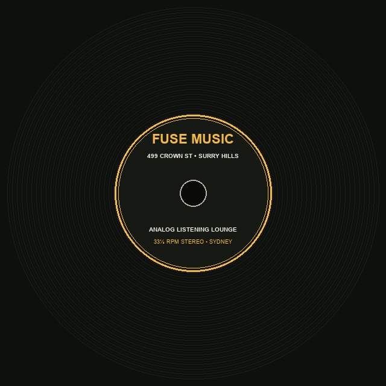

A BETTER KIND OF BACKGROUND NOISE — 2026 / 100 CUTS
Stay for
the feeling.
Sounds for crossing town, staying late, starting over. 100 original instrumental and artist recordings from the Fuse listening room. Find your frequency.

THE FULL ROTATION / 100 CUTS
Every track,
on rotation.
THE RECORD SHELF / 01
Fresh out
of the room.
JUST THE GOOD STUFF. ↓
SONIC LINEAGE & GENRE ATLAS
The 100 cut constellation.
TAP TO EXPLORE SONIC TEXTURE ✦
Explore the constellation
Hover or tap any genre cluster to inspect its sonic identity, BPM range, and sample cut.
THE INDEX / 02
Find your
frequency.
Search 100 tracks, 100 artists, signature releases, tempo, mood or sonic prompts. Supports syntax: bpm:>120, genre:rock, mood:calm, year:2017.
YOUR CORNER / 03
Keep what
moves you.
Saved here, on this device. Your taste stays yours.
LISTENER ARCHIVE & MILESTONES
Your room journey.
AUDIOPHILE ENGINE TELEMETRY
Audio engine status.
MAKE SOMETHING OF IT
Your sets.
THE RUNNING ORDER / 04
Coming
right up.
Shape what plays next. Drag or move tracks, jump to what's live, or queue upcoming cuts.
THE PEOPLE & THE PLACE
Made to
be heard.
Fuse Music is a Sydney listening room for original instrumental sound. Put it on. Let it take you somewhere.

Say hello.
Got a question about the music? We actually read the mail.
help@fusemusic.com.au ↗+61 2 9699 7555 ↗Find us.
499 Crown StreetSurry Hills, Sydney NSW 2010
Australia
ABN 73 727 962 025
Fax +61 2 9699 0222